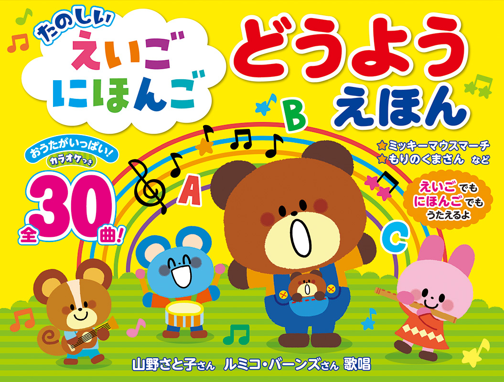
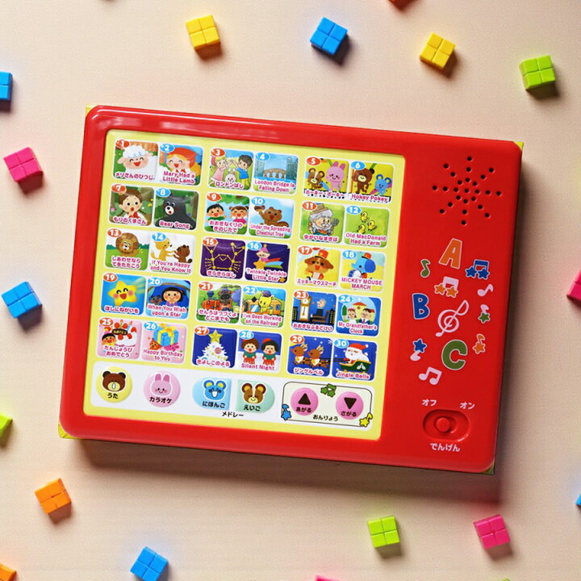
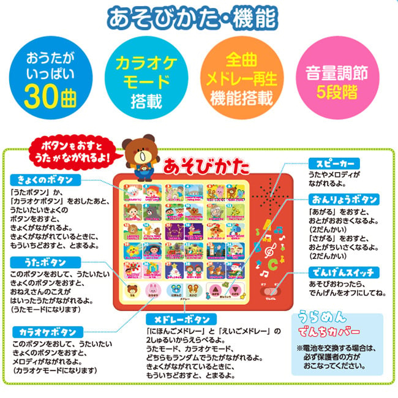
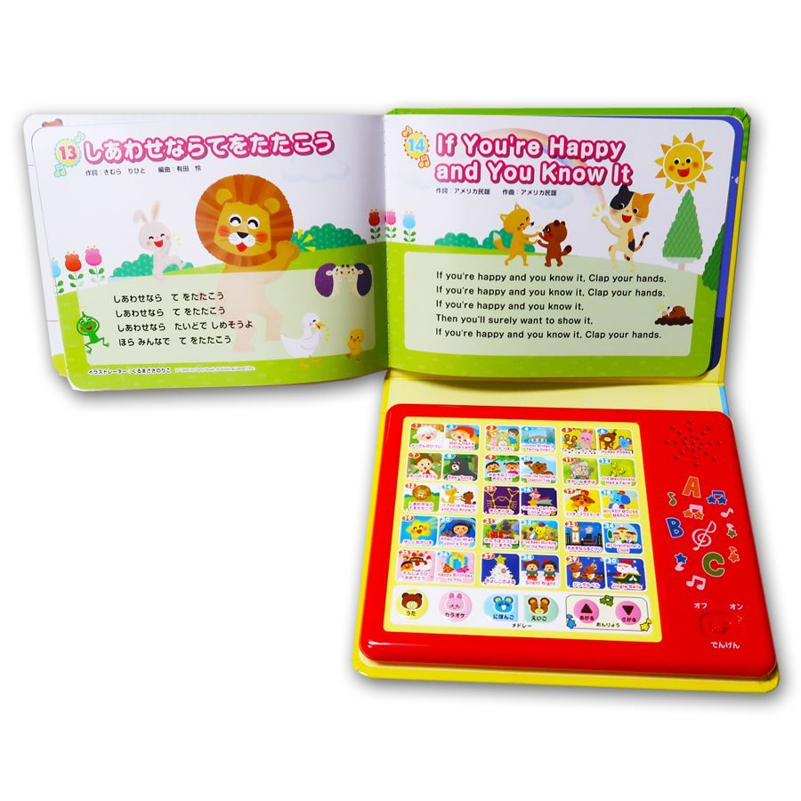
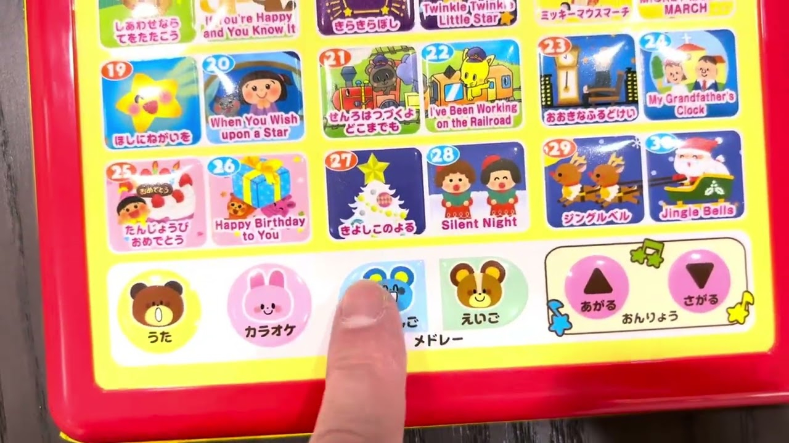

日本親子選物誌

Sound Book｜雙語童謠有聲繪本
たのしい えいご にほんご どうようえほん 快樂英文 × 日文童謠有聲繪本
把孩子熟悉的童謠，做成可以按、可以聽、可以跟唱的互動書。日文與英文版本並列，讓幼兒透過旋律自然接觸兩種語言的聲音。
這是什麼樣的書？
《たのしい えいご にほんご どうようえほん》是一款幼兒有聲繪本，書本下方結合紅色音效面板，孩子按下歌曲圖示後即可播放音樂。它的核心不是教孩子背英文，而是透過熟悉旋律、重複聆聽與親子跟唱，讓英文先成為「聽得懂、敢開口模仿」的聲音經驗。
這類書很適合作為第一本雙語音樂書：操作簡單、回饋立即，孩子會因為按鍵與音樂產生參與感，家長也能用輕鬆的方式陪唱，不需要把共讀變成上課。
🎵 30首歌曲收錄日文童謠與英文童謠，可用同一旋律建立語言連結。
🎤 卡拉OK模式可把歌聲關掉，只保留伴奏，適合孩子練習跟唱。
▶ Medley播放可連續播放歌曲，適合遊戲時間、車上或日常背景音樂。
內容特色
- 同時接觸日文與英文：孩子可以先聽熟日文，再聽英文版本，降低陌生感。
- 圖像式歌曲按鍵：每首歌用小插圖表示，比單純文字更適合幼兒辨識。
- 音量可調整：具備5段音量，家庭使用時更容易控制聲量。
- 有歌詞頁可對照：家長可一邊看歌詞、一邊帶孩子跟唱。
- 實體互動感強：比手機播放更像一本書，也較容易建立「聽音樂＝翻書共玩」的儀式感。
內頁與功能介紹

紅色音效面板，歌曲按鍵排列清楚，孩子可以自己選歌。

功能包含歌曲、卡拉OK、Medley播放、音量調整與電源開關。

內頁呈現日文歌詞與英文歌詞，適合家長陪唱與對照。

可切換日文、英文與卡拉OK模式，使用方式直覺。
怎麼玩？
- 先聽日文：讓孩子先熟悉旋律與節奏。
- 再切英文：同一首旋律換成英文，孩子較容易接受。
- 跟著拍手或做動作：像〈If You're Happy and You Know It〉這類歌曲很適合加入肢體動作。
- 使用卡拉OK模式：孩子熟悉後，可試著只聽伴奏自己唱。
- 睡前或車上用Medley：不一定每次都要完整共讀，也可作為日常聽力輸入。
適合哪些孩子？
1–2歲喜歡按按鍵、聽聲音，適合建立音樂與書本的親近感。
2–3歲開始會跟著哼唱、模仿語音，可用短句與動作陪玩。
3–5歲可嘗試跟唱英文，培養自然語感與開口信心。
日本親子選物誌觀點
這本書的價值在於「降低英文啟蒙的門檻」。很多孩子一開始對英文陌生，但對旋律、節奏、重複聲音很敏感。當英文被放進童謠裡，孩子不會覺得是在學習，而是在玩聲音。
從親子共讀角度看，它也很適合忙碌家庭：不需要準備教材、不需要家長英文很好，只要陪孩子按鍵、聽歌、跟唱，就能產生穩定的語言輸入。若家中已經有英文繪本，這本可以作為「聲音入口」；若孩子還不習慣英文，則可作為第一本英文音樂互動書。
商品資訊
| 日文書名 | たのしい えいご にほんご どうようえほん |
|---|---|
| 中文書名 | 快樂英文 × 日文童謠有聲繪本 |
| 類型 | 幼兒有聲繪本／雙語童謠書／音效書 |
| 歌曲 | 全30曲，含日文童謠與英文童謠 |
| 功能 | 歌曲播放、卡拉OK模式、Medley連續播放、5段音量調整 |
| 建議年齡 | 約1–5歲親子共玩 |
| 適合情境 | 英文啟蒙、日文童謠聆聽、親子共唱、車上音樂、睡前輕鬆聽 |
實際規格、電池與安全標示請以商品實物或出版社標示為準。